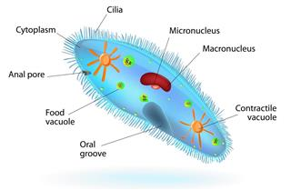

Cell
A cell is a mass of cytoplasm that is bound externally by a cell membrane.
Usually microscopic in size, cells are the smallest structural units of living matter and compose all living things.
Most cells have one or more nuclei and other organelles that carry out a variety of tasks. Some single cells are
complete organisms, such as a bacterium or yeast. Others are specialized building blocks of multicellular organisms,
such as plants and animals.
Unicellular organisms
Unicellular organisms are individual units, capable of metabolizing their
own nutrients, synthesizing various types of molecules, supplying their own energy and replicating themselves to
produce the succeeding generations. For more information

Imagem 1
In this image we can see the structure of unicellular organisms